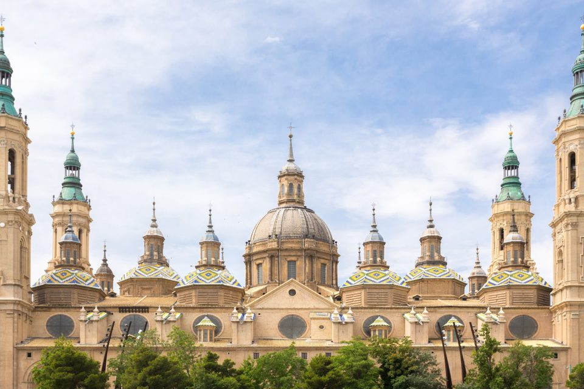
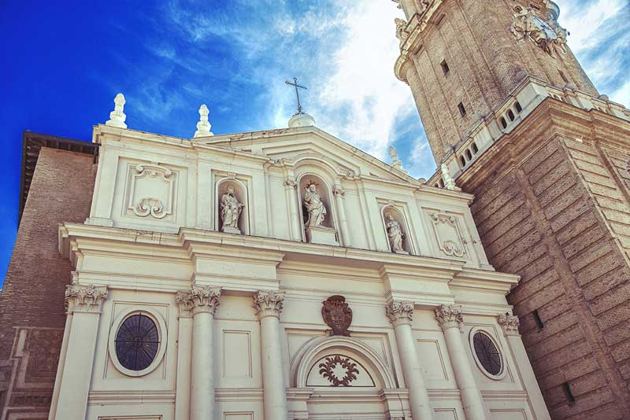
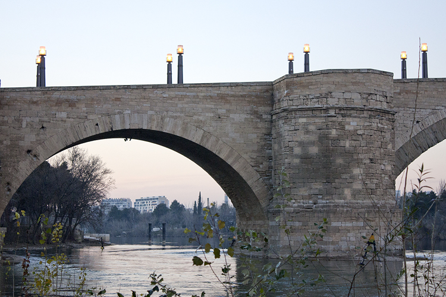

ZARAGOZA
Zaragoza es la capital de la región de Aragón, en el noreste de España. Sobre el río Ebro, en el centro de la ciudad, está la basílica barroca Nuestra Señora del Pilar, un famoso sitio de peregrinación con un santuario de la Virgen María y varias cúpulas. Entre los sitios de estilo mudéjar que combinan la arquitectura islámica y gótica, se encuentra la Aljafería, un palacio morisco del siglo XI, y la Catedral del Salvador, que comenzó a construirse en el siglo XII.

Andrea: Los primeros vestigios humanos encontrados en la ciudad pertenecen a la prehistoria, concretamente al siglo VII a.C., hacia el final de la edad de Bronce y corresponden a unas cabañas de adobe que se situaban en la confluencia de los ríos Ebro y Huerva.
La catedral-basílica de Nuestra Señora del Pilar o Santo Templo Metropolitano de Nuestra Señora del Pilar de Zaragoza es un importante templo barroco de España. ... Actualmente se encuentran desplazados al tramo de los pies del templo, para dotar de mayor espacio a los fieles que ocupan la nave desde el altar mayor.
El palacio de la Aljafería es un palacio fortificado construido en Zaragoza en la segunda mitad del siglo XI por iniciativa de al-Muqtadir como residencia de los reyes hudíes de Saraqusta. Este palacio de recreo refleja el esplendor alcanzado por el reino taifa en el periodo de su máximo apogeo político y cultural.
La catedral del Salvador en su Epifanía de Zaragoza es una de las dos catedrales metropolitanas de Zaragoza, junto con la basílica y catedral del Pilar. Habitualmente es llamada «la Seo», en contraposición a «el Pilar».
La Plaza de Nuestra Señora del Pilar o simplemente Plaza del Pilar es uno de los centros populares más concurridos en Zaragoza, España. En ella se encuentra la Catedral-Basílica de Nuestra Señora del Pilar, donde es venerada la advocación mariana homónima.
El puente de Piedra y el Pretil de San Lázaro son un conjunto monumental levantado sobre el río Ebro en la ciudad de Zaragoza. En 1401 se iniciaron las obras del actual puente, dirigidas por Gil de Menestral, que concluyeron cuarenta años después. Los pretiles datan del siglo XVIII.
